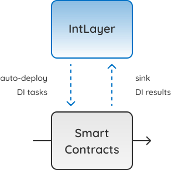
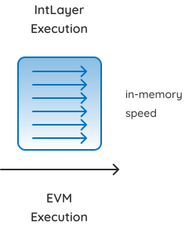
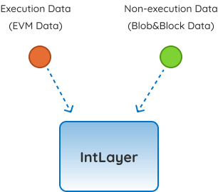
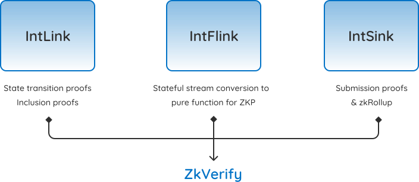

Int
Layer
The Data Intelligence Layer of World Computer
Task Dashboard!
Try it now!
Data Streaming Computation.
Zero-trust, Real-time at Internet-scale
Smart Contracts
EVM execution
Auto DeployTasks
Sink Results
IntLink
Data Source
Management & Relay
IntFlink
Data Stream
Parallel Engine
IntSink
DI Results
Sink Automation
Services secured as EigenLayer AVS
Design Philosophy.
Extended Layer for EVM.
IntLayer outsources only resource-intensive executions (Data Intelligence) from EVM， making it much more flexible and better fit into existing ethereum L1/L2s ecosystem.

Data Stream Parallel Run.
IntLayer scales Data Intelligence tasks with IntFlink, a stream process framework and engine for parallel computation over bounded and unbounded data streams.

Data Source Beyond EVM.
IntLayer pushed EVM to new boundries by not only addressing computation resource limitation but also enabling EVM to access non-execution data from blobs, consensus layers and oracles.

Don’t Trust, Just zkVerify
Data Intelligence tasks are defined and executed in full EVM primitives. Stream Processing is done perfectly zero-trust, ZK verifiable on-chain.

Use IntLayer.
Pre-sink DI Results
Precompile DI Schema
Rust DSL
ZKML Integration

<div class="w-full max-w-[1024px] px-6"><div class="mb-8 flex justify-between"><div class="flex cursor-pointer items-center"><svg width="24" height="24" viewBox="0 0 24 24" fill="none" xmlns="http://www.w3.org/2000/svg"><path d="M3.00002 12H21" stroke="#1A1A1A" stroke-linecap="round" stroke-linejoin="round"></path><path d="M9 6L3 12L9 18" stroke="#1A1A1A" stroke-linecap="round" stroke-linejoin="round"></path></svg><span class="ml-4 text-sm">Back to SkillHub</span></div><div class="flex items-center"><button class="btn hover:opacity-90 transition-all min-h-min disabled:shadow-none contained font-normal btn-primary mr-2 h-8 lg:hidden">Apply</button><div class="inline-flex items-center bg-[#EFEFEF] py-2 px-4 text-sm rounded cursor-pointer hover:opacity-80 transition-opacity"><svg class="mr-[6px]" xmlns="http://www.w3.org/2000/svg" width="16" height="16" viewBox="0 0 16 16" fill="none"><path d="M8.66667 1.33301L14.6667 7.33301L8.66667 12.9997V9.33301C4 9.33301 2 14.333 2 14.333C2 8.66634 3.66667 4.99967 8.66667 4.99967V1.33301Z" stroke="#1A1A1A" stroke-linecap="round" stroke-linejoin="round"></path></svg>Share</div></div></div><div><h5 class="mt-4 mb-6 text-[42px] leading-[48px]">
="M8.66667 1.33301L14.6667 7.33301L8.66667 12.9997V9.33301C4 9.33301 2 14.333 2 14.333C2 8.66634 3.66667 4.99967 8.66667 4.99967V1.33301Z" stroke="#1A1A1A" stroke-linecap="round" stroke-linejoin="round"></path></svg>Share</div></div></div><div><h5 class="mt-4 mb-6 text-[42px] leading-[48px]">="M8.66667 1.33301L14.6667 7.33301L8.66667 12.9997V9.33301C4 9.33301 2 14.333 2 1 [48px]">="M8.66667 1.33301L14.6667 7.33301L8.66667 12.9997V9.33301C4 9.33301 2 14.333 2 1[48px]">="M8.66667 1.33301L14.6667 7.33301L8.66667 12.9997V9.33301C4 9.33301 2 14.333 2 9.33301 2 14.333 2 1[48px]">="M8.66667 1.33301L14.6667 7.33301L8.66667 12.9997V9.33301C4 9.33301 2 14.333 2 9.33301 2 14.333 2 1[48px]">="M8.66667 1.33301L14.6667 7.33301L8.66667 12.9997V9.33301C4 9.33301 2 14.333 2
Int
Layer
Sophon elevates the blockchain security economics to new heights, powered by the interoperability and FHE technologies.